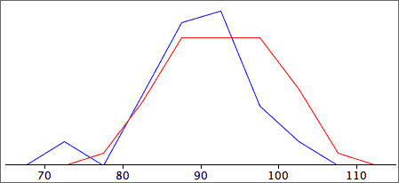
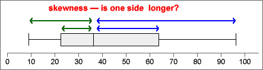
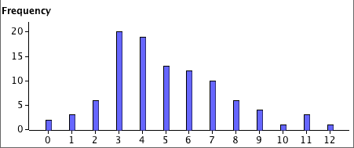

If you don't want to print now,
Density
In a stacked dot plot (or stem and leaf plot), the highest stacks contain the most values. These stacks have the highest density of values.
Histograms more directly show how density varies along the axis.
Histograms
In a simple histogram, the axis is split into sub-intervals of equal width called classes. A rectangle is drawn above each class with height equal to the number of values in the class — the frequency of the class.

Aim of a 'smooth' histogram
There is considerable freedom in the choice of histogram classes. The exact shape depends on:
We usually choose classes with the aim of smoothness in the outline of the histogram rectangles.

The choice of 'best' classes is subjective, but...
If your conclusions about what a histogram tells you about the data depend on the choice of histogram classes, you are over-interpreting its shape.
Warning for small data sets
For small data sets, changing the class width and the starting position for the first class can give a surprising amount of variability in histogram shape, so be extremely wary of over-interpreting features such as clusters or skewness.
Indeed, it is probably better to avoid using histograms unless there is a reasonable number of values — stacked dot plots are far less likely to mislead you over minor features.
Relative frequency
When all histogram classes are of equal width, histograms are often drawn with a vertical axis giving the frequencies (counts) for each class. The vertical axis can alternatively be labelled with the relative frequencies (proportions) for the classes.
(There is no harm in including both axes.)

Area equals relative frequency
An important property of histograms is that the proportion of values in one or more classes equals the proportion of the histogram area above these classes.

Therefore,
Relative frequency = proportion of the total area
Relative frequencies to compare two groups
Histograms may be superimposed to compare two groups. However if the groups differ in size, it is usually more meaningful to compare relative frequencies (proportions) than the counts in the classes.
Use relative frequency histograms to compare groups.
For example,

Mixed class widths
For some data sets, wider classes give a smoother histogram in some ranges of values (e.g. in the tail of a distribution) and narrower classes are better in other parts of the distribution (usually where there is greater density of values).
In a correctly drawn histogram, each value contributes the same area.
Histograms can be drawn with mixed class widths, but it would be badly misleading to make the rectangle heights equal to either the class frequency or relative frequency.

Area and proportion of values
The details of drawing histograms by hand with varying class widths are unimportant — a computer should be used. To interpret their shape remember that
The proportion of the total area above any classes equals the proportion of values in them.
For example,

Frequency polygons
A frequency polygon is closely related to a histogram with equal class widths. It joins the midpoints of the tops of the class rectangles and tends to give a smoother outline than the corresponding histogram.

It is easier to distinguish and compare superimposed frequency polygons for two groups than the corresponding histograms.

Kernel density estimates
A kernel density estimate is an alternative to a histogram that often results in a smoother display of the density of values. Each data value on the axis is replaced by a 'blob' of ink (kernel) and these kernels are stacked.

The widths of the kernels can be adjusted — if they are too narrow, the display becomes jagged, but if they are too wide, the display becomes too spread out and detail is lost.
Frequency table
A computer is normally used to draw histograms. Hand-drawn histograms are based on a frequency table that lists the histogram classes and their frequencies.
To avoid ambiguity in the histogram, the class boundaries should be chosen to ensure that no data values are on boundaries. For example,
Height of a histogram rectangle
To draw a histogram by hand with equal class widths, each class rectangle can be drawn with height equal to its class frequency. If class widths vary, we need to calculate the density for each class with the formula:

and use this for the rectangle heights.
Unhelpful detail when comparing groups
Dot plots, stem and leaf plots and histograms contain a lot of detail about the distribution of values in a data set. This level of detail is useful when examining a single data set, but when several groups of values are being compared, the detail distracts from the main differences between the groups.
For example, the jittered dot plots below do not concisely summarise the differences between the five groups.

Five-number summary
Five values are enough to capture a lot of information about the distribution of values in a data set.
These values split the data set into four groups with approximately equal numbers of values.
Box plot
A box plot displays the five-number summary graphically.

Details
The median, m, is the middle value if there is an odd number of values in the data set. If there is an even number of values, the median is the average of the middle two.
Different authors give slightly different definitions for the upper and lower quartiles. One definition of the lower quartile is the median of the lowest half of the data — i.e. of the values lower than m. (The upper quartile would then be defined as the median of the top half of the values.)
Provided you are consistent, different definitions of the quartiles should lead you to the same conclusions.
Box plots and histograms
Since the median and quartiles split the data set into quartiles, they also split a histogram of the data into four approximately equal areas.

What does a box plot tell you about the distribution?



Outliers and skew distributions
Basic box plots cannot show whether the minimum and maximum in a distribution are outliers or simply the end of skew distributions.

Box plots and clusters
Box plots cannot show clusters in data.

Before using a box plot, always look at the data with a dot plot or histogram to make sure that there are no clusters.
Box plots to compare groups
To display the distribution of values in a single set of data, a dot plot or histogram is more useful than a box plot. However for comparison of two or more groups of values box plots are particularly effective — they highlight differences between the centres, spreads of values and skewness of the groups.

It is important to distinguish two types of numerical data.
Dot plots for counts
Dot plots can be used to display count data. However since discrete values are often repeated several times in a data set, the crosses need to be jittered or, preferably, stacked.

If there is a stack for each integer value, the stacked dot plot is a complete representation of the data.
Displaying moderate or large counts
For discrete data sets whose values are large counts, a histogram can be used to give a 'smooth' summary of the shape of the distribution of values.
If the counts are a bit smaller, the exact definition of the histogram classes becomes important. The class boundaries should end in '.5' to ensure that data values do not occur on the boundary of two classes.

Displaying small counts
When the range of values in a discrete data set is small, a histogram can be drawn with class width 1 (and with class boundaries ending in '.5'). These classes are centred on 1, 2, 3, etc.
This can be improved by narrowing the histogram rectangles into bars to emphasise the discrete nature of the data. This is called a bar chart.
